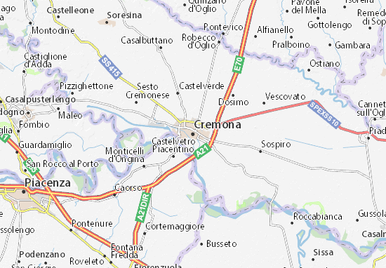

Museo Del Violino

Piazza Guglielmo Marconi, 5, 26100
Ora aperto
Fondazione: 1893
Il Museo del Violino è un museo musicale situato a Cremona. Il museo è noto soprattutto per la sua collezione di strumenti ad arco che comprende anche violini, viole, violoncelli e contrabbassi di rinomati liutai, tra cui Antonio Stradivari e Giuseppe Guarneri del Gesù.